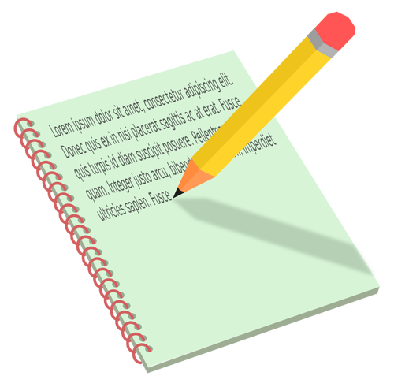

Con motivo de la festividad del día internacional de la Seguridad Vial, que se celebra cada 5 de octubre, vamos a elaborar un microrrelato o cuento corto.
Un microrrelato es un cuento o una pequeña historia muy breve.

Cuaderno y lápiz(Licencia Pixabay)
¿CÓMO TENEMOS QUE HACERLO?
Eligimos uno o varios personajes par mi historia. Por ejemplo: una anciana cruzando un paso de peatones, un chico montando en moto sin casco, un guardia de tráfico dirigiendo el trafico en la puerta del cole, niños yendo al colegio...
Elegimos el lugar donde sucede mi historia. Por ejemplo: en mi pueblo, en mi barrio, en mi calle, en un planeta muy lejano...
Situamos nuestra historia en un tiempo determinado. Por ejemplo: Hace una semana, hace dos días, esta mañana, el verano pasado...
Contamos un suceso o un pequeño problema que tenga que ver con la Seguridad Vial. Por ejemplo: si los niños que van al cole van por la acera, si la señora cruzó la carretera por el lado correcto, si hubo algún accidente...
No te olvides de acabar tu pequeña historia con un buen final. ¡Trata de ser lo más original posible!
¡Ponemos un títulooriginal a nuestra historia!
¿QUÉ NECESITO?
Para realizar esta pequeña actividad necesitaremos los siguientes materiales:
Un buen lapicero y goma para dar forma a tus ideas.
Un folio en blanco o si lo prefieres una hoja de tu cuaderno.
¿CUÁNTO TARDARÉ?
Tendremos 30 minutos para escribir nuestra pequeña historia.
Evaluación:
Para conocer qué tal estamos realizando nuestra tarea, podemos seguir la "Rúbrica" que tenemos a continuación (pulsa en ella para desplegarla).
En la rúbrica aparece en qué debemos fijarnos y cómo debemos hacerlo para que el trabajo nos salga estupendo.
Cuando la despliegues, para verla en un único folio, puedes pulsar en "Aplicar".
Rúbrica "Creamos historias"
Rúbrica para evaluar un informe escrito y gráfico
2 Excelente
1 Satisfactorio
0 Mejorable
Título
Tu título es muy creativo y resume muy bien la idea principal del tema. (2)
Tu título es creativo pero no resume bien la idea principal del tema. (1)
Tu título no es creativo y no resume la idea principal del tema. (0)
Personajes
Tu historia tiene unos personajes originales y acordes a lo que sucede en ella. (2)
Tu historia tiene unos personajes adecuados pero no se ajustan a lo que sucede en ella. (1)
Tu historia no tiene unos personajes originales ni acordes a lo que sucede en ella. (0)
Lugar
Tu historia sucede en un lugar concreto y original. (2)
Tu historia sucede en un lugar concreto pero poco original. (1)
Tu historia no se ajusta a un lugar concreto. (0)
Tiempo
Tu historia ocurre en un tiempo concreto y original. (2)
Tu historia ocurre en un tiempo concreto pero poco original. (1)
Tu historia no ocurre en un tiempo concreto. (0)
Presentación
Tu historia está bien presentada: letra legible y respetas los márgenes. (2)
Tu historia está bien presentada aunque cometes algún pequeño fallo: algún tachón, alguna palabra que no se entiende bien... (1)
Tu historia no está bien presentada: letra ilegible y no respetas los márgenes. (0)
Rúbrica para evaluar un informe escrito y gráfico(CC BY-SA)